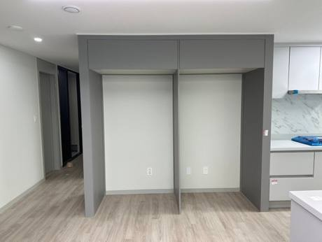
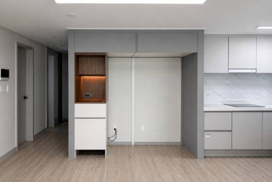
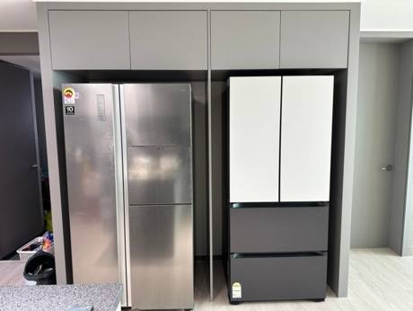
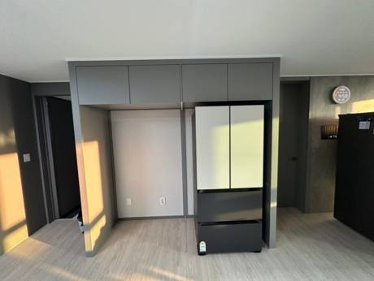

천안 현장
천안 냉장고장 중앙 기둥 제거
천안


이런 상황이었어요
입주 전에 LG 오브제 컬렉션 1+1+1 냉장고를 미리 사 두셨어요. 막상 설치하려고 보니 기존 냉장고장 가운데 기둥 때문에 키친핏으로 붙여 넣을 수 없었어요.
결과
기둥이 사라져 냉장고 설치 공간이 생겼고 주방도 훨씬 넓고 트여 보이게 됐어요. 고객님이 설치 후 사진도 보내 주셨어요.
냉장고와 김치냉장고를 나란히 넣는 냉장고장은 가운데 칸막이 위치가 새 냉장고와 안 맞는 경우가 많아요. 칸막이를 옮기거나 빼서 두 대가 딱 맞게 들어가게 해요.
천안·아산도 정기적으로 가는 지역이에요. 입주 전에 사 둔 LG 오브제 냉장고가 냉장고장 기둥 때문에 들어가지 않던 천안 현장처럼, 냉장고 모델에 맞춰 자리를 만들어 드려요.
천안 김치냉장고장
전체 철거가 아니에요. 프레임과 측판, 상부장은 살리고 걸리는 부분만 빼요.
칸막이만 잘라내면 상부장이 처지기 쉬워요. 상부장과 천장을 2단으로 보강해요.
칸막이가 있던 자리는 도배와 마루가 안 돼 있어서, 자재로 채워 마감해요.
단순 칸막이 제거는 3~4시간이면 끝나고 대부분 그날 냉장고를 넣어요.
천안 현장
천안
입주 전에 LG 오브제 컬렉션 1+1+1 냉장고를 미리 사 두셨어요. 막상 설치하려고 보니 기존 냉장고장 가운데 기둥 때문에 키친핏으로 붙여 넣을 수 없었어요.
기둥이 사라져 냉장고 설치 공간이 생겼고 주방도 훨씬 넓고 트여 보이게 됐어요. 고객님이 설치 후 사진도 보내 주셨어요.
진행 순서
반대쪽 상부장이 처지지 않게 지지대로 받치고 상부장을 내려요.
칸막이와 기둥을 빼고 냉장고 들어갈 폭을 다시 재요.
상부장과 천장을 보강하고 수평을 맞춰 다시 걸어요.
바닥과 벽을 마감하고, 남는 폭은 수납장으로 만들어요.
실제 현장


두 대용 구조를 대형 냉장고 한 대 자리로 넓히고, 남는 폭은 수납장으로.


쓸 수 있는 부분은 남기고 상부장, 수납장, 슬라이드 밥솥장을 새로 제작.


냉장고 자리를 맞추면서 남는 틈에 홈카페장과 청소기 자리를.


키친핏 냉장고가 안 들어가던 집. 상부장을 살려 비용을 아끼고 당일 사용.


새 냉장고 자리가 애매하던 신축 세대에 자리를 만들었어요.
칸막이 제거 30만원, 새로 짜기 100만원부터 (VAT 별도). 사진을 보고 우리 집 금액을 알려드려요. 비용 자세히 보기
자주 묻는 질문
네. 천안 김치냉장고장 상담부터 실측, 시공, AS까지 대표가 직접 가요. 사진과 아파트 이름을 문자로 보내 주시면 일정과 금액을 함께 알려드려요.
네. 냉장고장 옆이나 남는 폭에 김치냉장고 크기에 맞춰 칸을 만들 수 있어요. 모델명을 알려주세요.
상부장을 그대로 쓰고 칸막이만 빼서 틈새장을 만드는 부분 리폼은 30만원이에요(VAT 별도). 철거, 상부 보강, 폐자재 처리는 기본가에 들어 있어요.
권하지 않아요. 상부장은 높고 무거워서 떨어질 위험이 있고, 보강 없이 빼면 시간이 지나며 장이 주저앉을 수 있어요.
현장 사진 2~3장, 냉장고 모델명, 아파트 이름을 문자로 보내 주세요. 작업 중엔 전화를 못 받을 때가 많아 문자가 가장 빨라요.
현장 사진, 동네, 하고 싶은 일을 문자로 보내주세요. 작업 중엔 전화를 못 받을 때가 많아 문자가 가장 빨라요.